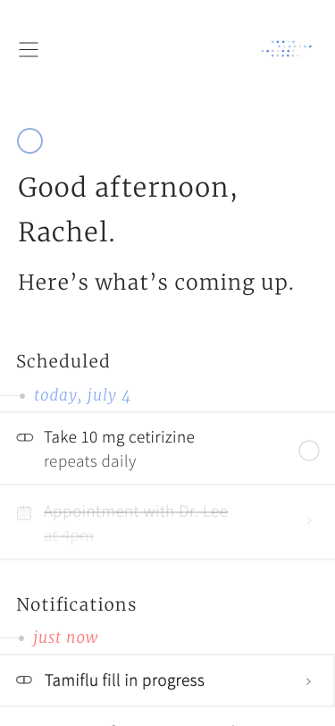
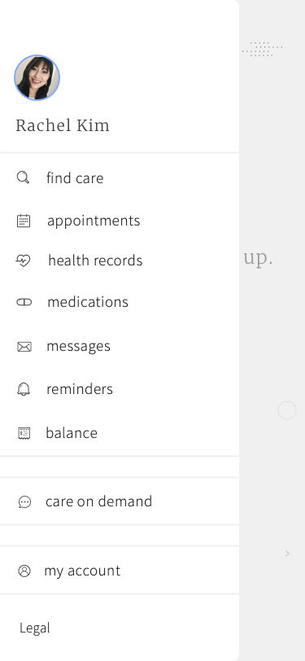
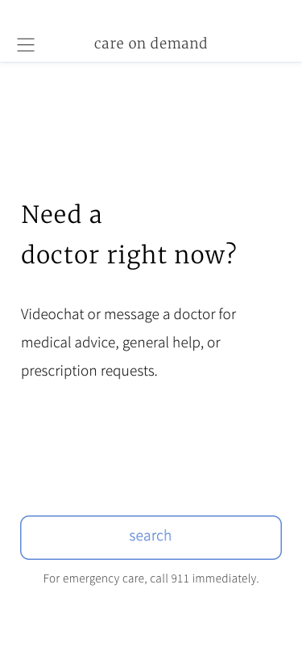

Vital: a UX study on healthcare
About:
This is a project I recently worked on over the summer as part of the General Assembly UX program. The objective and project timeline was simple: research a topic, identify the problem, prototype, and test.The topic I chose was healthcare. I began with an initial hypothesis, based on my own experiences and struggles:
Users are frustrated by inefficiencies and outdated methods in the healthcare system.
User research:
From there, I began the process of user research. Interviewing friends and family, I began to accumulate data on user preferences, needs, and, most importantly, their pain points.Some common feedback collected:
- users would rather communicate with their healthcare providers digitally, rather than by phone
- users dislike long wait times and limited availabilities common in doctors
- users often have trouble managing their health history, and those who do rely on paper and binders to track their medical health. Both would like a composite digital system for managing their records.
- users often have trouble navigating and understanding their insurance plan and status
- users also have difficulty managing their bills and charges, and strongly prefer e-bills over paper
Identifying the problem:
From there, I began to narrow down my problem statement. I kept it simple and to the point:What if we could simplify healthcare and make it intuitive?
Here's a look at a few of the final mockups:
  